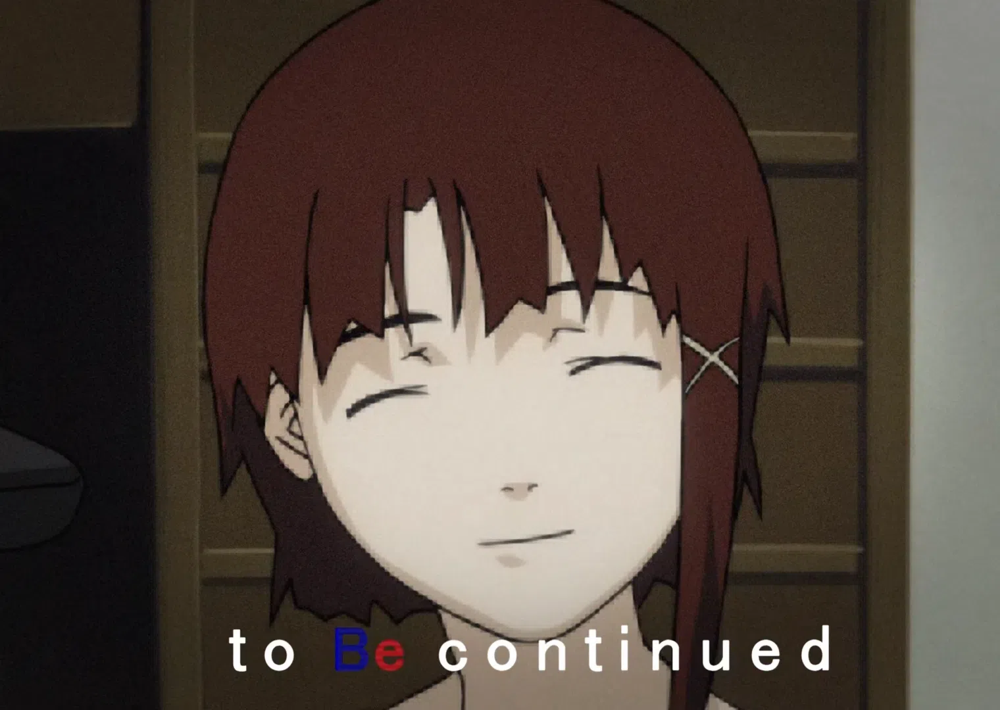

i have finally stopped being stuck in my head and got a decent portion of the front page done. heres to the future, and all the projekts and ideas that ive had in mind for years and years, and soon hopefully to be able to make them into a reality. given my mind doesnt give up or gets distracted, that is ^^.
hopefully this blog will also help me with my bpd and help me find real friends that dont copy me
